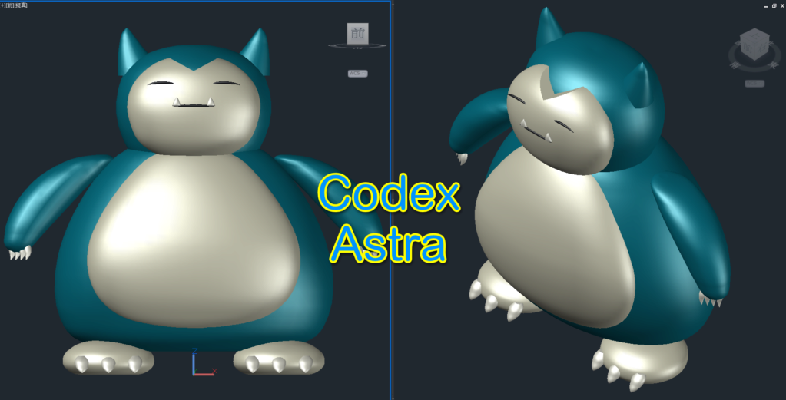
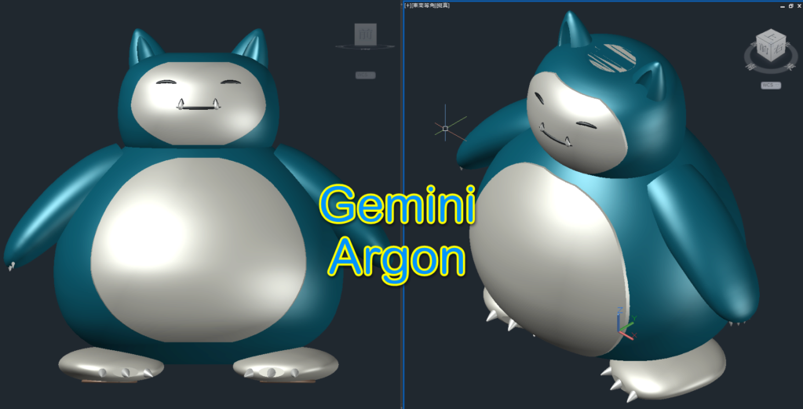

有興趣的朋友可以下載來玩玩
也可以使用提示詞自己寫再優化
這是我自己用 AutoCAD 建立的，是不是超可愛
號外！捕獲野生第三代「卡比鋼鐵獸」囉～
卡比獸：身高2.24M
卡比a夢：身高1.293M
卡比鋼鐵獸：身高1.96M


更多需求及知識技能可以參考課程👇實體課詳情:
https://kv1012tiger.github.io/ai-course/
👇延伸閱讀
[教學]AutoCAD 3D 卡比獸建模步驟分享
https://www.autocad-tw.com/t21423-topic
AutoCAD | 卡比獸 2D繪製 | 頻道影片展示
https://www.autocad-tw.com/t24228-topic
[作品]AutoCAD 3D Pokémon Go 卡比獸-進化了
https://www.autocad-tw.com/t20459-topic
👇提示詞範本下載(有lsp及dwg)